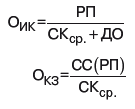
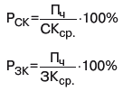

| Основным методом анализа эффективности использования собственного и заемного капитала является коэффициентный анализ, который объединяет систему показателей: 1. Коэффициенты оценки движения капитала (активов) преддпри-ятия, к которым относят коэффициенты поступления, выбытия и использования, рассчитываемые по всему совокупному капиталу и по его составляющим: • коэффициент поступления всего капитала показывает, какую часть средств от имеющихся на конец отчетного периода составляют новые источники финансирования (Кпост.– поступивший капитал; Кк – стоимость капитала на конец периода); КпК =Кпост./ Кк • коэффициент поступления собственного капитала показывает, какую часть собственного капитала от имеющегося на конец отчетного периода составляют вновь поступившие в его счет средства (СК – собственный капитал (здесь и далее индексы соответственно); КпСК =СКпост./ СКк • коэффициент поступления заемного капитал показывает, какую часть заемного капитала от имеющегося на конец отчетного периода составляют вновь поступившие долгосрочные и краткосрочные заемные средства (ЗК – собственный капитал); КпЗК =ЗКпост./ ЗКк • коэффициент использования собственного капитал показывает, какая часть собственного капитала, с которым предприятие начало деятельность в отчетном периоде, была использована в процессе деятельности (СКисп.– использованная часть собственного капитала; СКИ – собствен ный капитал на начало периода); КиСК =СКисп/ СКн • Коэффициент выбытия заемного капитала показывает, какая его часть выбыла в течение отчетного периода посредством возвращения кредитов и займов и погашения кредиторской задолженности (ЗКвыб.– выбывшие заемные средства). КвЗК =ЗКвыб./ ЗКн 2. Коэффициенты деловой активности позволяют проанализировать, насколько эффективно предприятие использует свой капитал: • коэффициент оборачиваемости собственного капитал с коммерческой точки зрения отражает излишки (недостаточность) продаж, с финансовой – скорость оборота вложенного капитала, с экономической – активность денежных средств, которыми рискует вкладчик (РП – объем реализации; СКср. – среднего довая стоимость собственного капитала); ОСК=РП/ СКСК • коэффициент оборачиваемости инвестиционного капитала рассчитывается по формуле (ДО – долгосрочные обязательства);  • коэффициент оборачиваемости кредиторской задолженности показывает, сколько компании требуется сделать оборотов инвестиционного капитала для оплаты выставленных ей счетов (СС(РП) – себестоимость реализованной продукции; КЗ – кредиторская задолженность). Оборачиваемость в днях рассчитывается как частное от деления количества дней в году на соответствующие коэффициенты оборачиваемости и показывает, сколько требуется дней для осуществления одного оборота собственного, инвестированного капитала или кредиторской задолженности. 3. Коэффициенты структуры капитала характеризуют степень защищенности интересов кредиторов и инвесторов. Рассчитываются: коэффициент собственного капитала, характеризующий долю собственного капитала в структуре капитала компании; коэффициент заемного капитала, выражающий долю заемного капитала в общей сумме источников финансирования предприятия, и коэффициент соотношения заемного и собственного капитала, характеризующий степень зависимости организации от внешних займов (кредитов). Коэффициенты этой группы называются также коэффициентами платежеспособности. 4. Коэффициенты рентабельности (доходности) показывают, насколько прибыльна деятельность компании, и исчисляются отношением полученной прибыли к используемым источникам средств:  • рентабельность собственного капитала представляет особый интерес для имеющихся и потенциальных владельцев обыкновенных и привилегированных акций (Пч – чистая прибыль); • аналогично – рентабельность заемного капитала. |